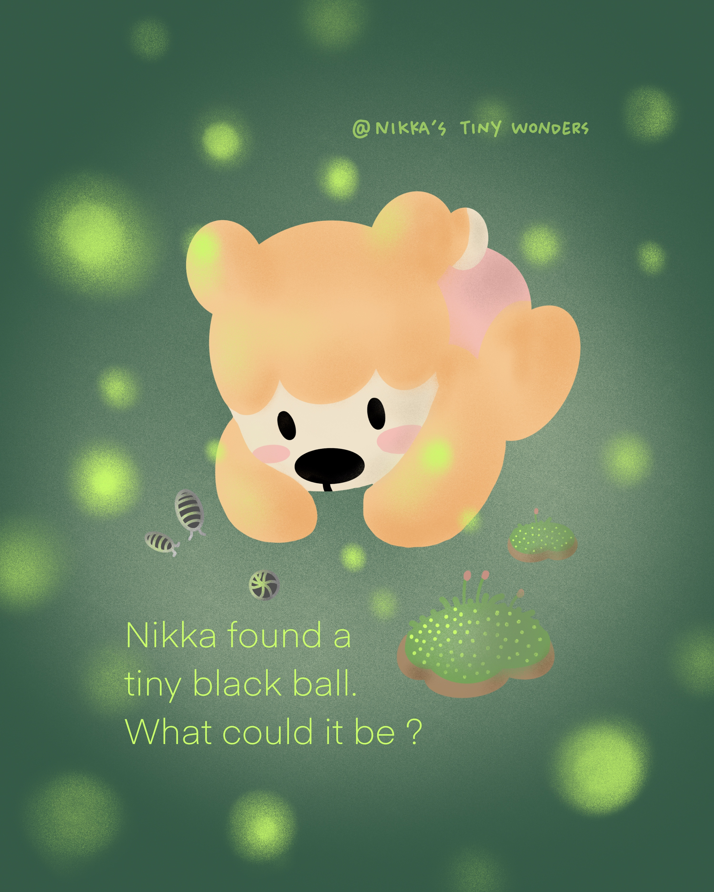
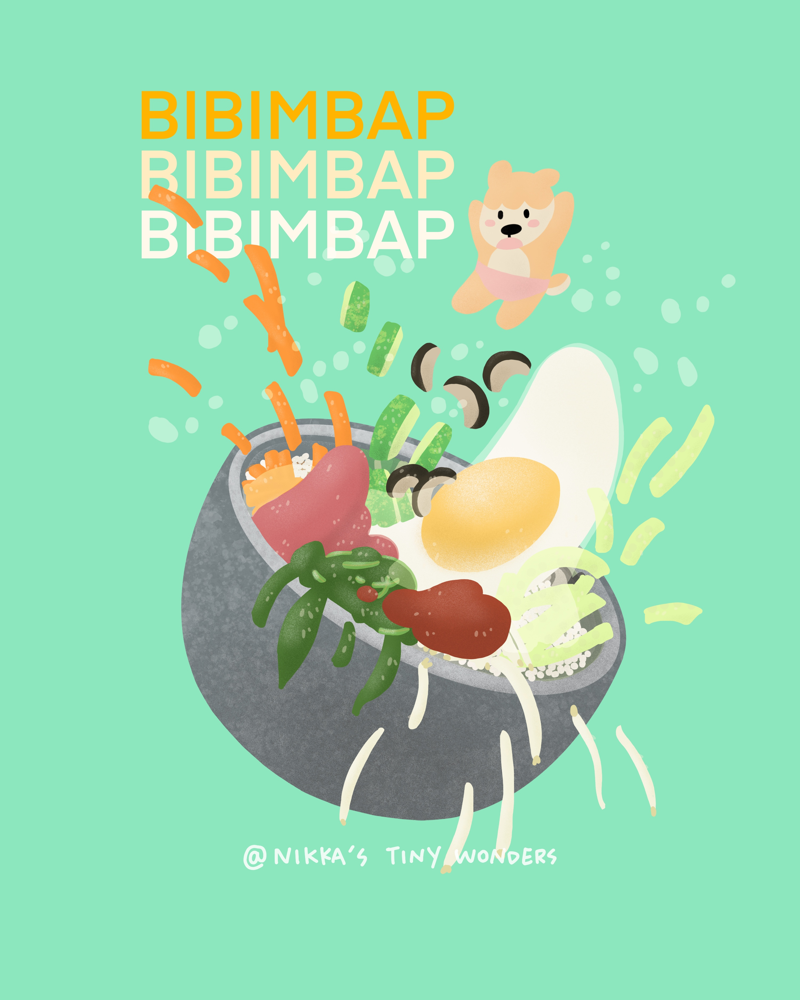

Personal Works
I explore self-expression through different artistic styles and drawing techniques, using personal work as a space for experimentation and visual exploration.




I explore self-expression through different artistic styles and drawing techniques, using personal work as a space for experimentation and visual exploration.

